macOS용 Metric
macOS용 타이밍 및 주파수 툴킷, 이제 내장 메트로놈 포함. 박자를 유지하든, 믹스에서 딜레이 타임을 조정하든, FM 패치를 튜닝하든, LFO를 동기화하든, 샘플을 전조하든 Metric은 정확한 답을 즉시 제공합니다 DAW 옆에 배치할 수 있는 사이드바 내비게이션 앱 하나로. 이제 Siri, Shortcuts 및 알림 센터 위젯과 함께.
- 탭 템포 및 시각적 비트가 있는 메트로놈
- BPM → ms / Hz 변환기 (보통, 점, 셋잇단)
- 음 ↔ 주파수 테이블 (108개 음, 조율 조절 가능)
- 전조 및 속도, FM 계산기, LFO 비율, 32개 하모닉스
- Siri, Shortcuts 및 알림 센터 BPM 위젯
스크린샷
웹사이트 디자인에 맞춘 라이트 모드 및 다크 모드 스크린샷 포함.

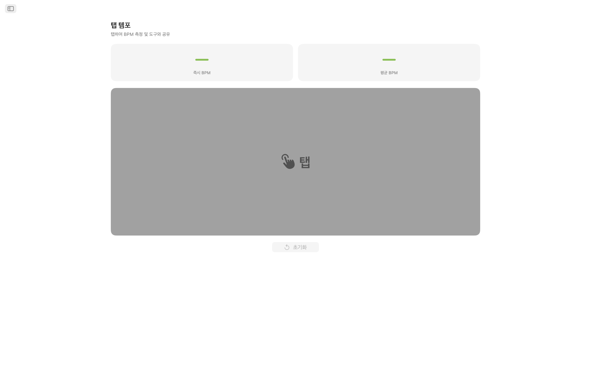
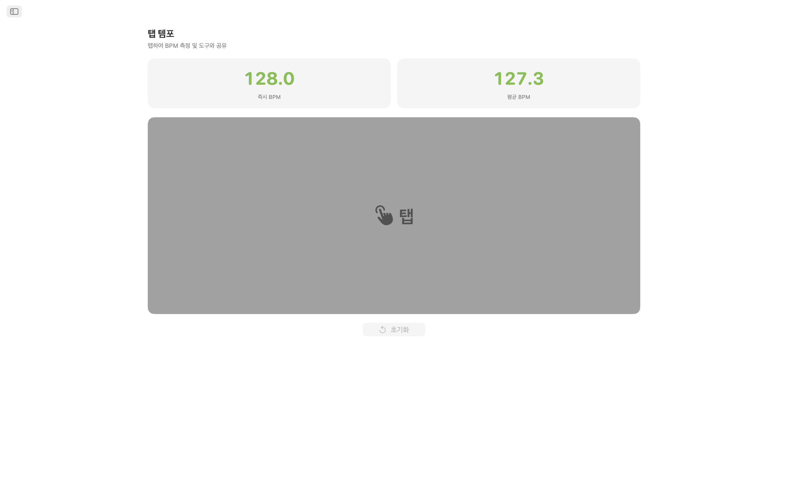
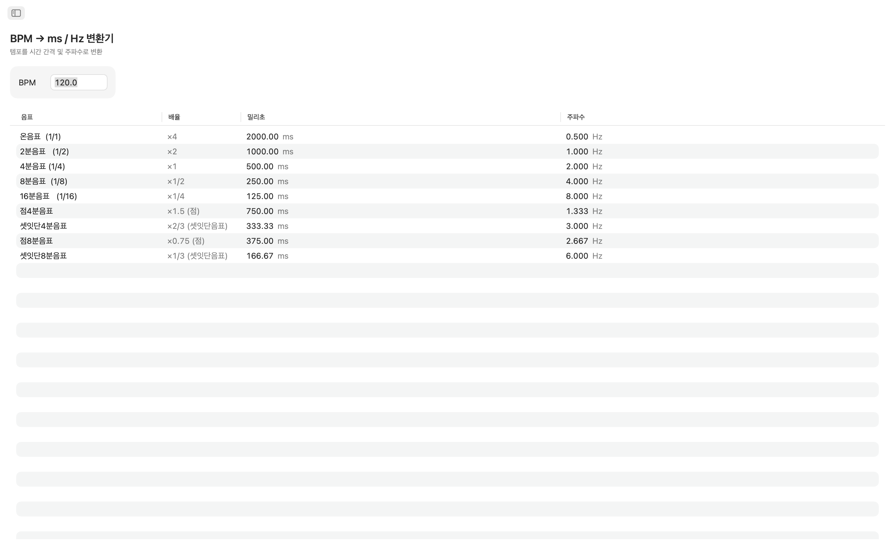
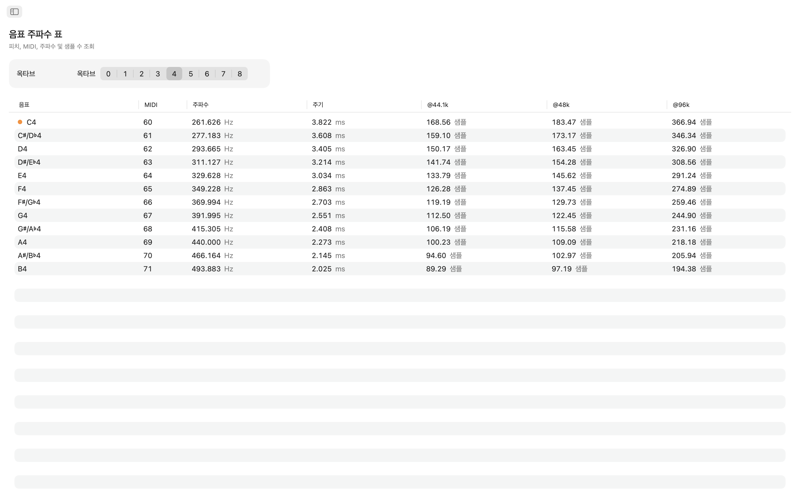
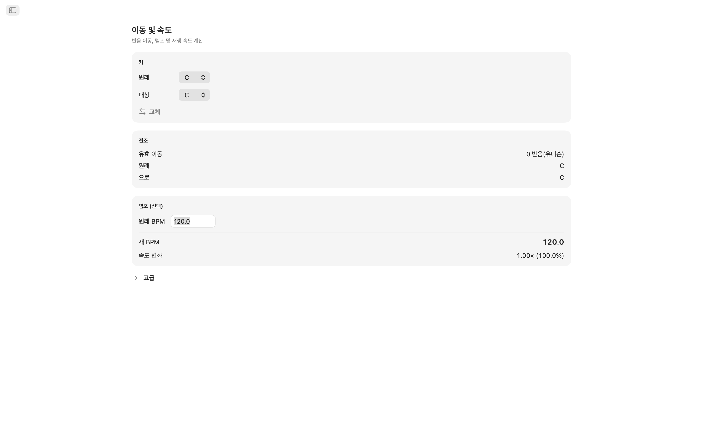
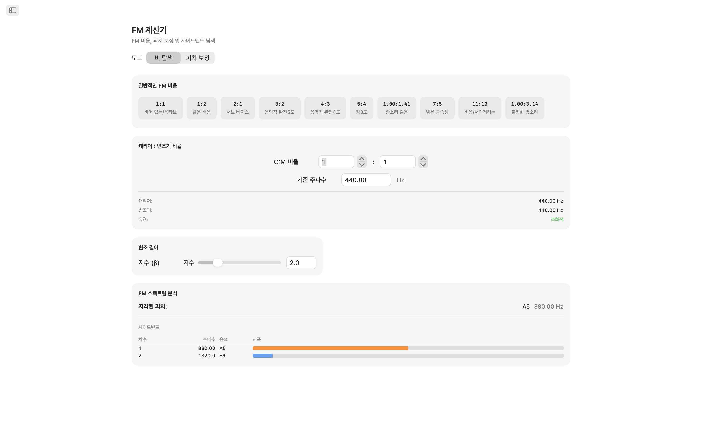
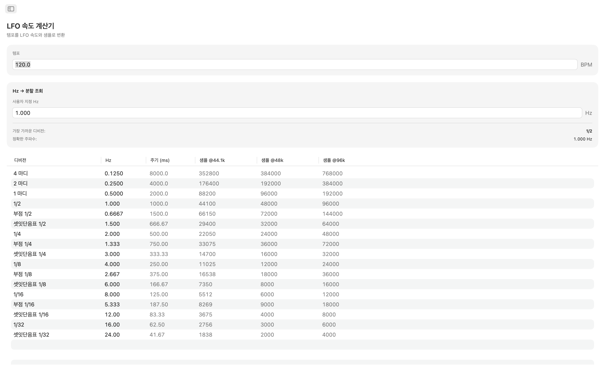
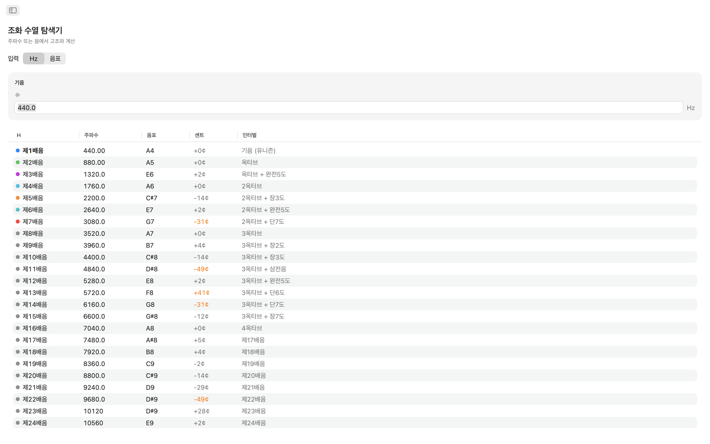
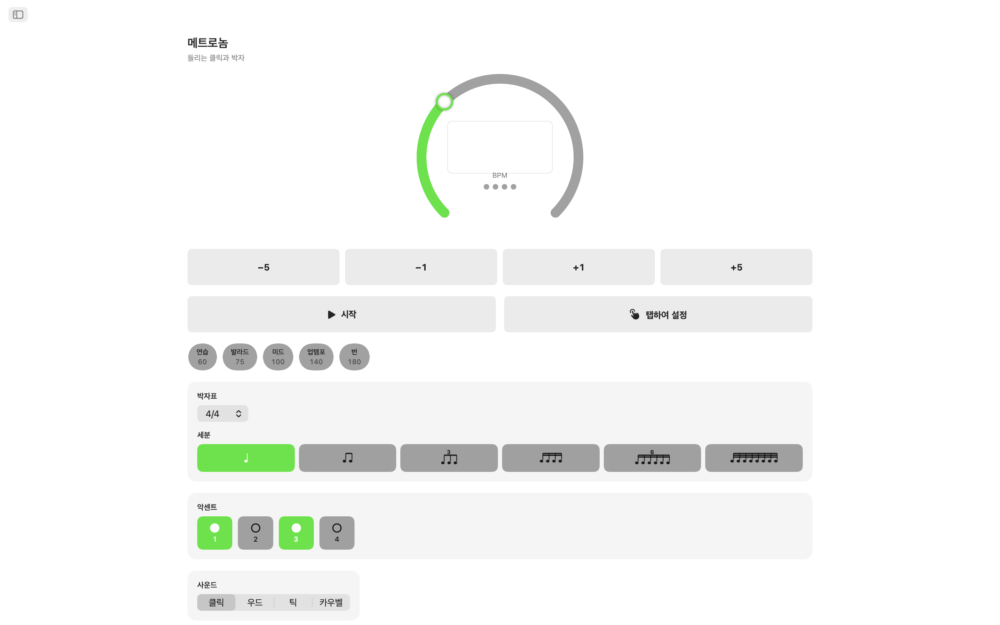
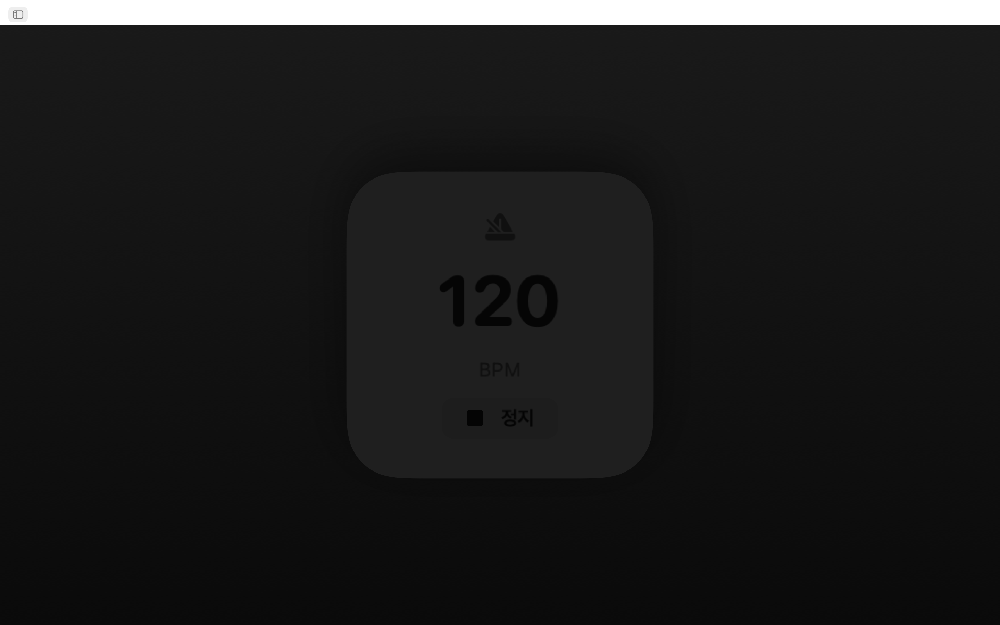
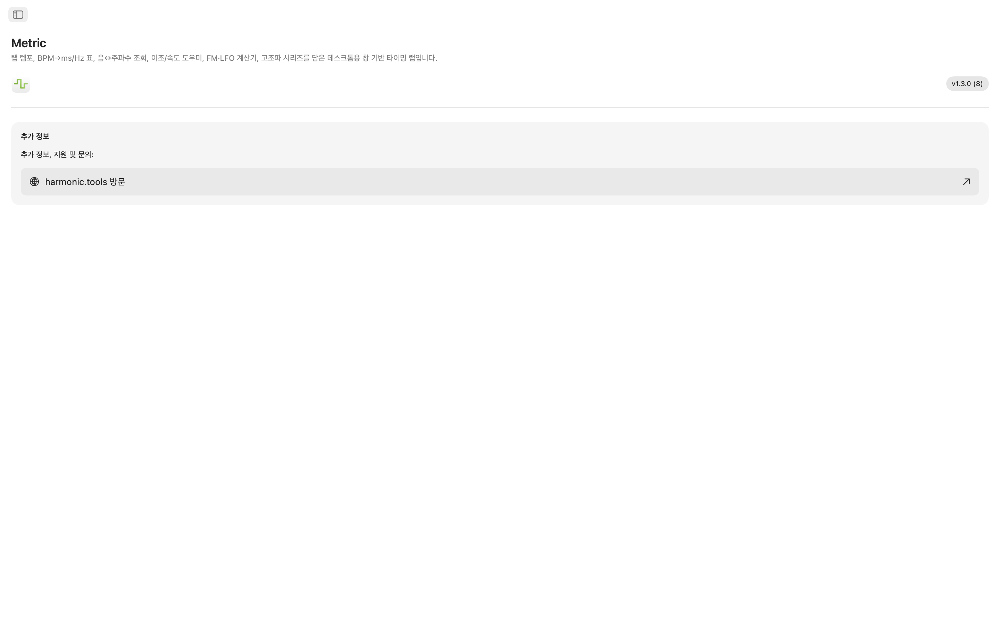
기능
- 메트로놈: 템포 다이얼, 탭으로 설정하는 템포, 박자와 분할, 명확한 시각적 비트 표시기를 갖춘 정밀한 메트로놈.
- 탭 템포: 넓은 탭 영역을 클릭하여 템포를 측정하세요. 마지막 탭의 즉시 BPM과 최대 8번 탭의 이동 평균을 확인할 수 있습니다. 어떤 측정값이든 한 번의 클릭으로 BPM 변환기, 전조 또는 LFO 비율로 바로 전송하세요. 템포가 모든 도구에 자동으로 공유됩니다.
- BPM → ms / Hz 변환기: 템포를 입력하면 온음표, 2분음표, 4분음표, 8분음표, 16분음표에 대한 보통, 점, 셋잇단 값을 읽을 수 있습니다. 각 행에 밀리초와 Hz가 표시되어 계산기 없이 딜레이, 리버브 프리딜레이 또는 사이드체인 타이밍을 조정할 수 있습니다.
- 음 주파수 테이블: C0부터 B8까지 108개의 반음계 음을 탐색하세요. 각 음의 MIDI 번호, Hz 주파수, 밀리초 단위 주기, 44.1kHz, 48kHz, 96kHz에서의 샘플 수를 확인할 수 있습니다. 가온다는 빠른 참조를 위해 표시됩니다. A4 = 440 Hz 기준입니다.
- 전조 및 속도: 원래 키와 목표 키를 선택하여 반음 이동, 음정 이름, DAW의 정확한 전조 값을 확인하세요. 원래 BPM을 추가하면 Metric이 새 템포와 재생 속도 비율을 계산합니다. 센트 컨트롤(±100)과 2옥타브 속도 컨트롤(±24반음)로 미세 조정하세요.
- FM 계산기: 비율 탐색기를 사용하면 기본 주파수로 캐리어-모듈레이터 관계를 설정하고 빈 옥타브(1:1)부터 비조화 벨(1:π)까지 10개의 클래식 FM 프리셋 중에서 선택할 수 있습니다. 피치 보정 모드는 역방향으로 작동합니다: 목표 음을 선택하면 정확한 캐리어 및 모듈레이터 주파수를 얻습니다. 두 모드 모두 최대 10개의 파셜, 주파수, 가장 가까운 음, 색상으로 구분된 진폭이 포함된 사이드밴드 테이블을 표시하며, 변조 지수 컨트롤로 제어됩니다.
- LFO 비율 계산기: 모든 BPM을 17가지 음악적 세분화를 통해 LFO 비율로 변환합니다. 4마디부터 1/32 셋잇단까지. 각 행에 Hz, 밀리초 단위 주기, 44.1kHz, 48kHz, 96kHz에서의 사이클당 샘플이 표시됩니다. 역방향 조회는 임의의 Hz 값을 입력하면 편차가 명확하게 표시된 가장 가까운 음악적 세분화를 찾습니다.
- 하모닉 시리즈 탐색기: 주파수를 입력하거나 원하는 음을 선택하면 처음 32개 하모닉스의 주파수, 가장 가까운 음 이름, 센트 편차, 음정 이름을 확인할 수 있습니다. 낮은 하모닉스는 쉬운 식별을 위해 색상으로 구분됩니다. 30센트를 초과하는 편차는 비조화 콘텐츠를 한눈에 감지할 수 있도록 강조됩니다.
서로 소통하는 도구들
한 번만 템포를 탭하면 모든 곳에 나타납니다: BPM 변환기, 전조, LFO 비율이 동일한 BPM을 실시간으로 공유합니다. 음 주파수, FM 계산기, 하모닉스는 모두 A4 = 440 Hz로 일관되게 유지됩니다.
Siri, Shortcuts 및 위젯
핌즈프리로 Metric을 사용하세요. Siri에게 메트로놈을 시작하거나 중지하고, BPM을 설정하고, 템포를 탭하고, BPM을 ms로 변환하고, 음 주파수를 찾거나, 템포를 전조하도록 요청하세요. 모든 도구는 Shortcuts 동작이기도 하며, BPM 위젯은 알림 센터에 템포를 표시합니다.
데스크톱을 위한 설계
- 완전한 오프라인 작동 계정, 광고, 추적 없음
- 사이드바 내비게이션의 네이티브 macOS 앱
- 시스템 테마를 따르는 다크 모드 호환 인터페이스
- 세 가지 표준 샘플 레이트: 44.1kHz, 48kHz, 96kHz
- 크기 조절 가능한 창 DAW 옆에 열어두세요
딜레이를 프로그래밍하는 프로듀서, FM 음색을 다듬는 사운드 디자이너, 오실레이터를 조율하는 키보디스트, 주파수를 확인하는 오디오 엔지니어 Metric은 모든 타이밍 및 주파수 답을 데스크톱에 제공합니다.